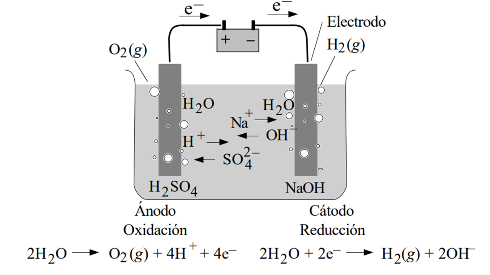
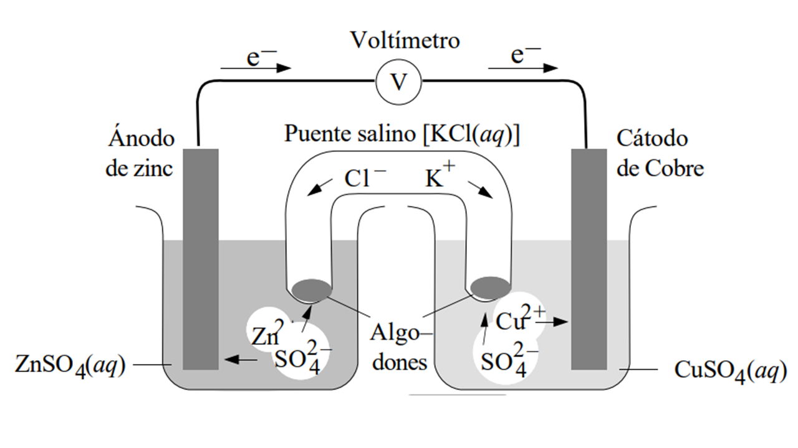
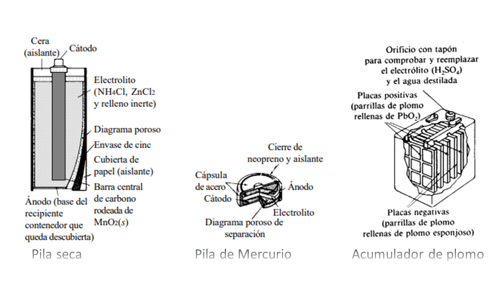
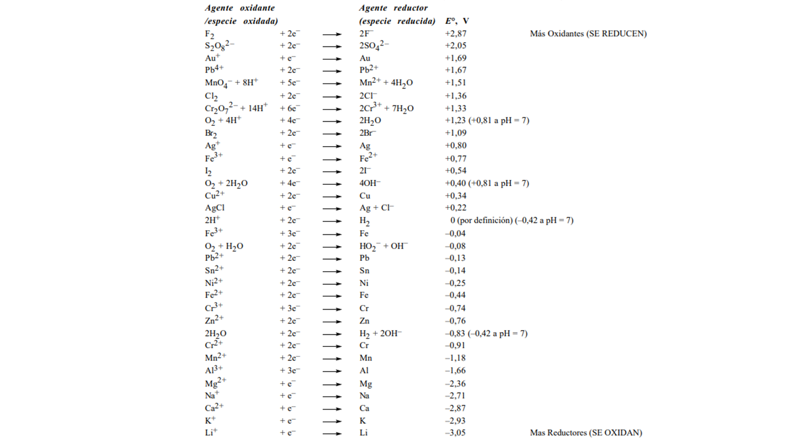

Oxidación y reducción: En una reacción de oxidación-reducción o rédox existe la transferencia de uno o más electrones de una especie a otra.
Un proceso rédox o reacción de célula puede ser dividido, para su estudio, en dos semisistemas o reacciones de electrodo:
La reacción inversa de una reducción es una oxidación: \(\text{Na} \longrightarrow \text{Na}^+ + 1e^-\) (el \(\text{Na}\) se oxida, es el reductor). La oxidación y la reducción ocurren a la vez: no puede haber oxidación sin reducción y viceversa.
El estado de oxidación de un átomo es la carga que tendría si se asignaran los electrones de cada enlace al átomo más electronegativo. Una especie se oxida cuando alguno de sus átomos constituyentes aumenta su estado de oxidación y se reduce cuando disminuye su estado de oxidación.
Se basan en procesos rédox. En el punto de equivalencia se cumple que: \(V_{\text{valorante}} \cdot cN_{\text{valorante}} = V_{\text{valorado}} \cdot cN_{\text{valorado}}\).
Indica cuales de las siguientes reacciones (sin ajustar) son de tipo rédox:
Indica, en aquellas que lo sean, cuál es el agente oxidante y cuál es el reductor.
Di el estado de oxidación de cada átomo de:
a) \(\text{NO}_2^-\); b) \(\text{HIO}_3\); c) \(\text{TeF}_6^{2-}\); d) \(\text{N}_2\text{O}_3\); e) \(\text{Na}_2\text{MoO}_4\); f) \(\text{RuF}_5\); g) \(\text{HCO}_3^-\); h) \(\text{S}_2\text{O}_3^{2-}\); i) \(\text{ClO}_4^-\); j) \(\text{CaC}_2\text{O}_4\).
Clasifica cada una de las siguientes semirreacciones como oxidación o reducción:
El cloro y sus compuestos presentan estados de oxidación −1, +1, +3, +5 y +7. ¿Cuáles de las siguientes especies pueden actuar como agentes oxidantes? ¿Cuáles como agentes reductores?
a) \(\text{HClO}_2\); b) \(\text{ClO}_4^-\); c) \(\text{Cl}^-\); d) \(\text{ClO}^-\); e) \(\text{Cl}_2\text{O}_7\).
Para cada una de las siguientes reacciones, identifica la especie oxidada, la especie reducida, el agente oxidante y el agente reductor. Ajusta las ecuaciones.
Ajusta las siguientes ecuaciones en disolución básica:
Ajusta las siguientes ecuaciones:
Cuando un proceso rédox no es espontáneo, puede ser forzado mediante la aplicación de un trabajo externo de tipo eléctrico (electrólisis).

Al electrolizar una disolución acuosa de una sal, debemos considerar no solo los iones de la sal, sino también la posible oxidación o reducción del agua. Se deben comparar los potenciales de reducción para predecir qué especie reaccionará primero:
Las leyes de Faraday relacionan la cantidad de electricidad que circula por la celda con la cantidad de sustancia química transformada:
📌 Fórmula fundamental:
Enunciado: Calcula la masa de Cobre metálico que se deposita en el cátodo al hacer pasar 2.0 A durante 30 minutos por \(\text{CuCl}_2\) fundido.
Paso 1 (Semirreacciones): Cátodo: \(\text{Cu}^{2+} + 2e^- \longrightarrow \text{Cu}(s)\)
Paso 2 (Carga Q): \(Q = I \cdot t = 2.0 \text{ A} \cdot 1800 \text{ s} = 3600 \text{ C}\)
Paso 3 (Moles e⁻): \(n(e^-) = \frac{3600}{96485} = 0.0373 \text{ mol } e^-\)
Paso 4 (Masa): \(n(\text{Cu}) = 0.0373 / 2 = 0.01865 \text{ mol} \implies 0.01865 \cdot 63.55 = \mathbf{1.18 \text{ g de Cu}}\)
Un proceso espontáneo puede ser aprovechado para generar trabajo eléctrico en lo que denominamos célula galvánica o pila. A diferencia de la célula electrolítica, aquí los procesos de reducción y oxidación deben separarse físicamente para evitar la reacción directa.
Las disoluciones se unen mediante un puente salino (o un tabique poroso) que contiene una disolución conductora (ej. \(\text{KNO}_3(aq)\) o \(\text{Na}_2\text{SO}_4(aq)\)) cuya función es cerrar el circuito eléctrico.
Al igual que en la célula electrolítica, los electrones fluyen desde el ánodo hacia el cátodo:
Existe un convenio de notación estándar para representar las células. Por ejemplo, el diagrama para una pila Daniell es:

¿Por qué es necesario un puente salino?
Sin el puente salino, la pila dejaría de funcionar casi instantáneamente debido a la acumulación de carga. Su función es doble:
Es común confundirse con los signos en las celdas. La clave para no olvidar nunca es recordar qué proceso químico ocurre en cada electrodo:
⚡ REGLA DE ORO (No cambia):
La diferencia de signo se debe a la naturaleza de la energía involucrada:
| Tipo de Celda | Ánodo (Oxidación) | Cátodo (Reducción) |
|---|---|---|
| Galvánica (Pila) | Polo Negativo (−) | Polo Positivo (+) |
| Electrolítica | Polo Positivo (+) | Polo Negativo (−) |
Explicación lógica:
Las pilas comerciales se clasifican según su capacidad de recarga y los reactivos utilizados en su fabricación:
| Tipo de Pila | Descripción | Ejemplos comunes |
|---|---|---|
| Primarias | Producen electricidad a partir de los reactivos introducidos durante su fabricación. No son recargables. | Pila seca (Leclanché), pila alcalina, pila de mercurio. |
| Secundarias | Deben cargarse antes de su uso. Son dispositivos recargables que permiten múltiples ciclos. | Ácido-plomo (automóviles), níquel-cadmio. |
Nota: Las baterías secundarias permiten invertir el proceso electroquímico mediante la aplicación de una corriente externa.

Una célula genera un potencial o fuerza electromotriz (E) entre sus dos polos. Es importante distinguir los estados del sistema:
El potencial de una célula es la suma de los potenciales de cada electrodo:
Debido a que no es posible determinar valores absolutos, se utilizan potenciales relativos al electrodo normal de hidrógeno: \(\text{Pt} \mid \text{H}_2(g, 1 \text{ atm}) \mid \text{H}^+(aq, 1 \text{ M})\).
Nota sobre el sentido de la reacción: Los potenciales de reducción y oxidación tienen el mismo valor absoluto pero signo contrario:
Por convención, todos los potenciales se listan como potenciales de reducción. A continuación se presenta la serie electroquímica, ordenada de mayor a menor tendencia a reducirse:

Antes de empezar, clasifica el problema según lo que te piden:
8 Establece qué productos se formarán en el ánodo y en el cátodo cuando se electrolizan disoluciones acuosas de los siguientes compuestos: a) HI; b) CuCl2; c) KOH; d) Ni(NO3)2; e) CoCl2.
9 Una forma de limpiar monedas (que contienen cobre parcialmente oxidado) en arqueología, consiste en colgar el objeto de un hilo de cobre unido al polo negativo de una batería, sumergirlo en una disolución de NaOH al 2,5% e introducir en la disolución un electrodo de grafito unido al terminal positivo. ¿Cuál es la reacción que tiene lugar en la moneda?
Para resolver problemas de diagramas y celdas, sigue este orden:
10 Compara el tipo de proceso químico, el signo del ánodo y del cátodo, y el sentido de circulación de la corriente eléctrica en las células electrolíticas y en las pilas galvánicas.
11 ¿Cuál es la función del puente salino en una célula galvánica?
12 Escribe las semirreacciones y la reacción de célula para cada una de las siguientes células:
13 Imagina una célula para cada una de las siguientes reacciones: a) \(\text{Cr}(s) + \text{Zn}^{2+}(aq) \longrightarrow \text{Cr}^{2+}(aq) + \text{Zn}(s)\); b) \(\text{H}_2(g) + \text{Cl}_2(g) \longrightarrow 2\text{HCl}(aq)\); c) Reacción de precipitación; d) Dilución.
Estos problemas requieren considerar condiciones no estándar:
14 Ordena los siguientes elementos según su carácter reductor: a) Cu, Zn, Cr, Fe; b) Li, Na, K, Mg.
15 Para las siguientes parejas, determina quién reducirá a quién: a) \(\text{K}^+/\text{K}\) y \(\text{Na}^+/\text{Na}\); b) \(\text{Cl}_2/\text{Cl}^-\) y \(\text{Br}_2/\text{Br}^-\).
16 Determina si los siguientes metales pueden ser depositados electroquímicamente a partir de una disolución acuosa: a) Mn, b) Al, c) Ni, d) Au, e) Li.
17 (Diagrama de potencial hipotético M). Analiza la espontaneidad de las reacciones indicadas (a-f) basándote en los potenciales de reducción.
18 Argumenta la elección del signo en la ecuación de Nernst \(E = E^\circ \pm \frac{RT}{nF}\ln Q\).
19 Calcula el potencial de los semisistemas \(\text{H}^+(aq)/\text{H}_2(g)\) y \(\text{H}_2\text{O}(l)/\text{H}_2(g)\) a pH = 0, 7 y 14.
a) ¿Qué cantidad de corriente se precisa para producir 0,015 mol de Cl₂(g) en el ánodo? (F = 96485 C/mol e⁻)
b) ¿Cuánto tiempo deberá pasar una corriente de 0,010 A para producir 0,015 mol de H₂(g) en el cátodo?
Se electroliza una disolución de NaCl durante 80 minutos, con lo que se desprenden 5,0 litros de Cl₂(g) medidos en condiciones normales (Vm = 22,4 L/mol, F = 96485 C/mol). Calcula:
a) la cantidad de corriente que pasó por la disolución.
b) la intensidad de la corriente.
c) el volumen de gas desprendido en el cátodo durante el proceso en condiciones normales.
Calcula los gramos de Zn depositados a partir de cloruro de cinc fundido (0,010 A, 1 h).
Calcula las masas de Zn y \(\text{Cl}_2\) liberadas tras pasar 173673 C.
Calcula el volumen de \(\text{O}_2\) formado si se depositan 23,8 mg de Ag.
Tiempo necesario para consumir 1,50 g de Zn en la reacción \(\text{Zn} + \text{Cl}_2\) a 0,10 A.
Masa de Pb consumida en un acumulador con capacidad de 100 Ah.
Cálculos de \(E^\circ\) para el sistema Zn/H₂.
Ajuste y cálculo de \(E^\circ\) para diversas reacciones redox (a-d).
Cálculos de potencial normal para Fe/H₂ y pilas Cr/Ni.
Aplicaciones de la ecuación de Nernst en diversas condiciones de concentración y pH.
Problemas sobre pilas de concentración y cálculo de potencial.
Cálculos de \(\Delta G^\circ\), constante de equilibrio (K), producto de solubilidad (\(K_{ps}\)) y estabilidad de complejos.